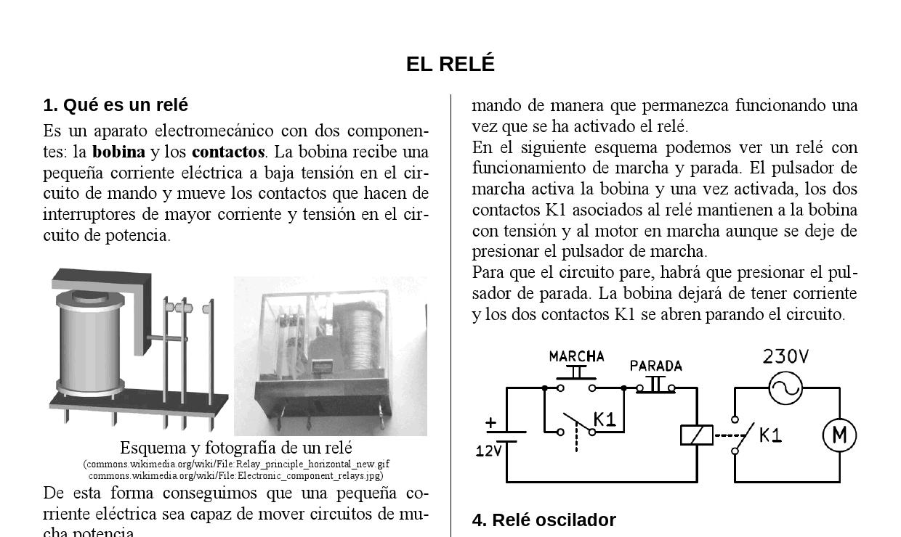
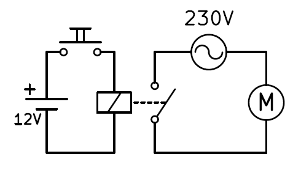
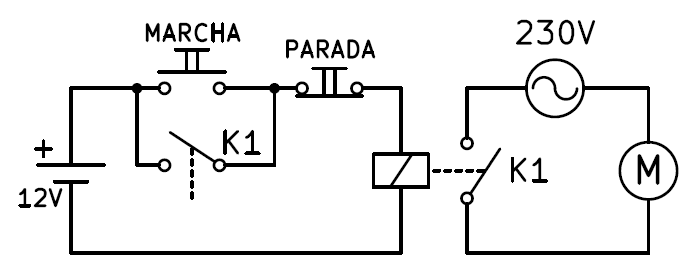
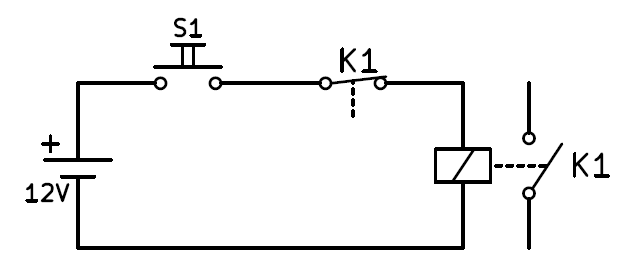

2. Els relés¶
Els relés són els primers dispositius elèctrics utilitzats en l’automatització elèctrica.
En aquesta unitat estudiarem la història del relé, la seva operació, els esquemes elèctrics més habituals i diversos tipus de relés.

: Descarregueu: `El relé. Format PDF <Electric/Components-Rele/Electric-Reles.pdf> `
: Descarregueu: `El relé. Format editable Doc <Electric/Components-Rele/Electric-Reles.Doc> `
Què és un relé¶
És un dispositiu electromecànic amb dos components: la bobina i els contactes. La bobina rep un petit corrent elèctric de baixa tensió al circuit de control i mou els contactes que fan interruptors de corrent i tensió més grans al circuit de potència.

Esquema d’un relé¶
D’aquesta manera aconseguim un petit corrent elèctric per poder moure circuits d’alta potència.
Funcionament del relé¶
En el següent esquema podem veure el circuit d’un relé en funcionament.
El circuit de control ** ** es deixa i està compost per una pila de 12 volts, un botó i la bobina del relé. Quan es prem el botó, el corrent arriba a la bobina i s’activa l’alimentació (commutador).
El circuit de potència ** ** consisteix en un contacte de relé, un generador de corrent altern de 230 volts i un motor. Quan el contacte es tanca, el motor arriba al motor i comença.
{kind=link}

Circuit d’un relé alimentat a 12 volts que actua amb un motor de 230 volts.¶
Un avantatge d’aquest disseny és que el botó té una tensió segura per a les persones, separada de l’alta tensió del motor més adequada per subministrar grans potències.
Relé gravat¶
Un relé té diversos contactes, alguns normalment oberts i d’altres normalment tancats. Aquests contactes es poden utilitzar per alimentar el circuit de control de manera que es mantingui funcionant un cop activat el relé.
En el següent esquema podem veure un relé amb progrés i funcionament de parada. El botó de marxa activa la bobina i un cop activat, els dos contactes K1 associats al relé mantenen la bobina amb tensió i el motor en funcionament, fins i tot si s’atura el botó de març.
{kind=link}

Esquema d’un relé amb botons de març i parada que actua amb un motor de 230 volts.¶
Perquè el circuit s’aturi, haureu de prémer el botó STOP. La bobina deixarà de tenir corrent i els dos contactes K1 s’obren aturant el circuit.
Relé oscil·lador¶
En aquest cas, la retroalimentació es farà amb un contacte normalment tancat del relé K1. Quan es prem el botó S1, el corrent circularà per la bobina. La bobina actuarà movent els contactes i s’obrirà el contacte K1 normalment tancat. Quan s’obri aquest contacte, deixarà de circular el corrent per la bobina. La bobina deixarà d’actuar, de manera que el contacte K1 es tancarà de nou permetent que el corrent circuli de nou.
{kind=link}

Relé oscil·lador amb contacte normalment tancat.¶
El resultat serà una oscil·lació en què el relé vibrarà una i altra vegada obrint i tancant els seus contactes a tota la velocitat que permet el seu disseny.
Història del relé¶
El relé es va inventar el 1835 i es va començar a utilitzar en telegrafia per amplificar els senyals de llarga distància. Com que el relé és capaç de controlar una potència de sortida més gran que la de l’entrada, es pot considerar un amplificador que permeti augmentar la qualitat dels senyals telegràfics.
El 1941, Konrad Zuse va construir el primer ordinador basat en relé. Els relés van ser substituïts posteriorment per vàlvules de buit, molt més ràpidament. A partir de l'any 1954, els transistors van començar a utilitzar -se, més ràpid i molt més fiable. Actualment, els transistors encara s’utilitzen en ordinadors i en molts dispositius electrònics.
Tot i que els relés ja no s’utilitzen com a base dels ordinadors, encara avui s’utilitzen sovint en automatisme per controlar motors i altres elements de gran potència. Podeu trobar exemples a les cases per moure els ascensors, les bombes d’aigua o el temporitzador de la llum de l’escala.
Contactors¶
Els contactors són relés especials d’alta potència que serveixen per moure motors de tres fases, és a dir, tenen tres línies elèctriques actuals.
Al dibuix següent podeu veure l’esquema d’un contactor que alimenta un motor de tres fases. En aquest circuit podeu veure el valor dels relés per gestionar grans potències i commutar molts circuits amb un petit senyal de baixa tensió.
{kind=link}
Exercicis¶
- Per a què serveix un relé i per a què serveix?
- Dibuixa l’esquema d’un relé que s’encén una bombeta de 125 volts d’una pols alimentada a 24V.
- Dibuixa l’esquema d’un relé que s’encén una resistència de 23 ohms a 220V amb dos botons, un març i una parada. Expliqueu com funciona el circuit.
- Dibuixeu els dos estats d’un relé oscil·lador mentre premeu el botó.
- Quins usos ha tingut el relé al llarg de la història? Per què s’utilitza avui?
- Quins components electrònics van substituir el relé?
- Què és un contactor i per què s’utilitza?
- Dibuixa l’esquema d’un contactor que sempre funciona un motor fins que es pressioni un contacte normalment tancat.